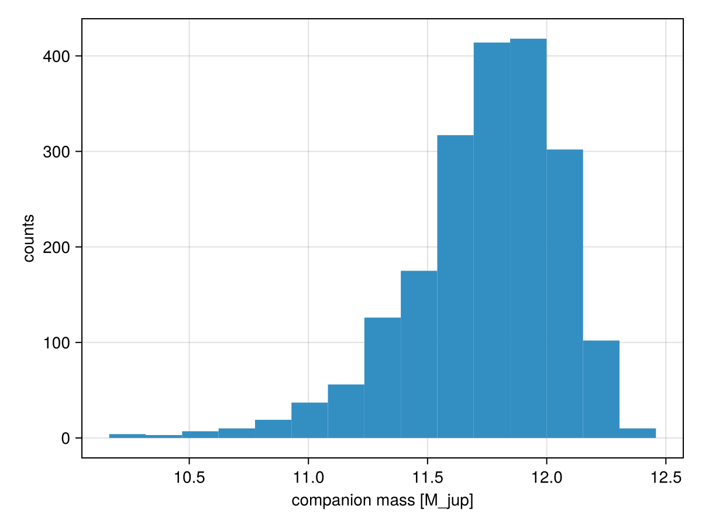

Connecting Mass with Photometry
A body's brightness in a given band is an ordinary model variable, named flux_<band> and declared in that body's own @variables block. Because it is an ordinary variable, it can be derived from other variables — and the most useful thing to derive it from is the body's mass, through an evolutionary model.
That is what this page is about: closing the loop between the dynamical mass a fit measures from orbital motion and the photometry the same fit measures from images or spectra.
using Octofitter
using Distributions
using CairoMakieWhere the flux variable lives
The flux is a variable of the body, and the observation just says which body and which band it measured:
b = Body(name="b", about=A, variables=@variables begin
flux_H ~ Uniform(0, 1) # the parameter
# ...
end)
phot = PhotometryObs(H_band_table; target=b, band=:H, name="NIRC2")The observation goes in the system's observations= list, not on a body.
The practical consequence is that two instruments observing the same body in the same band share one parameter. If you want them to be independent — because you do not trust the cross-calibration — put them in different bands (flux_H_nirc2, flux_H_sphere) and give each PhotometryObs the matching band=.
band=:H reads the variable flux_H; band=:default (the default) reads a bare flux. This is the same variable-name → band mapping that Photocentre weights are built from, and that ImageObs and InterferometryObs read, so photometry and photocentres cannot disagree about how bright a body is.
A simple derived flux
Start with the shape of the thing, using a made-up brightness model. Any function of the body's other variables will do:
H_band_model(mass) = sqrt(mass) # your model or function here
A_toy = Body(name="A", variables=@variables begin
mass ~ truncated(Normal(1.0, 0.1), lower=0.1)
end)
b_toy = Body(name="b", about=A_toy, variables=@variables begin
mass ~ Uniform(0, 1) # M⊙
flux_H = $H_band_model(mass) # derived from the mass!
a ~ Normal(16, 3)
e ~ truncated(Normal(0.2, 0.2), lower=0, upper=0.99)
ω ~ Normal(0.6, 0.2)
i ~ Normal(0.5, 0.2)
Ω ~ Normal(0.0, 0.2)
tp ~ Uniform(50000, 60000)
end)Two things to note about the syntax:
$H_band_modelinterpolates the function into the compiled model. Any function, closure or interpolator you have in scope can be used this way. See Derived Variables.- Inside a body's block, bare names refer to that body's own variables (
mass),system.Xreaches the system block, andA.Xreaches another body. Bodies look up and outward; siblings never see each other.
The real thing: an evolutionary model
Octofitter ships interpolators over the Sonora Bobcat cooling and atmosphere grids, which will be auto-downloaded on first use. Together they map (age, mass) → temperature → absolute magnitude:
const cooling_tracks = Octofitter.sonora_cooling_interpolator()
const absmag_H = Octofitter.sonora_photometry_interpolator(:MKO_H)
const absmag_L = Octofitter.sonora_photometry_interpolator(:Keck_L′)
# (age in Myr, mass in M⊙) -> temperature in K
cooling_tracks(40.0, 12mjup)1409.5885390494432# (temperature in K, mass in M⊙) -> absolute magnitude
absmag_H(cooling_tracks(40.0, 12mjup), 12mjup)12.460323999436772Every mass is in M⊙, and these interpolators follow suit. mjup, mearth and msun are plain multiplicative constants, so 12mjup reads naturally and means the right thing. A bare 12.0 means 12 M⊙, which lands off the end of the grid and returns NaN rather than raising an error — construct the interpolator with mass_unit=:Mjup if you would rather work in Jupiter masses.
The interpolators return absolute magnitudes. A flux_<band> variable is a linear flux — photocentres weight bodies by it directly, and the image and interferometry likelihoods sum it — so the conversion
flux_H = 10^(-0.4 * abs_mag_H)is not optional. Feeding a magnitude straight into flux_H weights bodies by a logarithm and silently produces a wrong photocentre and a wrong contrast.
If you pin the host's flux to 1.0 so that companion fluxes are contrast ratios, take the magnitude difference to the host first, as below.
Here is the whole model. The host's flux_H is fixed to 1.0, which makes every other body's flux a contrast ratio; the companion's contrast is then computed from its mass and the system's age, and compared against measured contrasts in two bands:
A = Body(
name="A",
variables=@variables begin
mass ~ truncated(Normal(1.0, 0.1), lower=0.1) # M⊙
# Fixing the host's flux to 1 in each band makes every other body's
# flux a contrast ratio against the host.
flux_H = 1.0
flux_L = 1.0
end
)
b = Body(
name="b",
about=A,
variables=@variables begin
mass ~ LogUniform(2mjup, 25mjup) # M⊙
# Evolutionary model: age + mass -> temperature -> absolute magnitude
tempK = $cooling_tracks(system.age, mass)
abs_mag_H = $absmag_H(tempK, mass)
abs_mag_L = $absmag_L(tempK, mass)
# Absolute magnitude -> contrast ratio against the host.
# The 10^(-0.4 Δmag) step is what turns a magnitude into a flux.
flux_H = 10^(-0.4 * (abs_mag_H - system.host_abs_mag_H))
flux_L = 10^(-0.4 * (abs_mag_L - system.host_abs_mag_L))
a ~ Normal(16, 3)
e ~ truncated(Normal(0.2, 0.2), lower=0, upper=0.99)
ω ~ Normal(0.6, 0.2)
i ~ Normal(0.5, 0.2)
Ω ~ Normal(0.0, 0.2)
tp ~ Uniform(50000, 60000)
end
)Now the data. One PhotometryObs per band, each naming the body it measured and the band it measured it in. The phot and σ_phot columns are in whatever units the model's flux_<band> variables are in — here, contrast ratios:
H_band_data = PhotometryObs(
Table(phot=[2.4e-4], σ_phot=[4.0e-5]);
target = b,
band = :H,
name = "NIRC2_H",
)
L_band_data = PhotometryObs(
Table(phot=[7.5e-4], σ_phot=[1.2e-4]);
target = b,
band = :L,
name = "NIRC2_L",
)
sys = System(
name="HD12345",
bodies=[A, b],
observations=[H_band_data, L_band_data],
variables=@variables begin
plx ~ truncated(Normal(12.0, 0.01), lower=0.1)
age ~ truncated(Normal(40, 5), lower=1) # Myr
host_abs_mag_H = 3.4 # host absolute magnitudes
host_abs_mag_L = 3.3
end
)
model = Octofitter.LogDensityModel(sys)LogDensityModel for System HD12345 of dimension 10 and 2 epochs with fields .ℓπcallback and .∇ℓπcallback
Sampling this model measures the companion's mass, because the only way the model can reproduce the measured contrasts is by putting the companion at a mass whose cooling track gives those magnitudes at the system's age:
init_chain = initialize!(model)
chain = octofit(model, iterations=2000, adaptation=2000)Chains MCMC chain (2000×33×1 Array{Float64, 3}):
Iterations = 1:1:2000
Number of chains = 1
Samples per chain = 2000
Wall duration = 1.97 seconds
Compute duration = 1.97 seconds
parameters = plx, age, host_abs_mag_H, host_abs_mag_L, A_mass, A_flux_H, A_flux_L, b_mass, b_a, b_e, b_ω, b_i, b_Ω, b_tp, b_tempK, b_abs_mag_H, b_abs_mag_L, b_flux_H, b_flux_L
internals = n_steps, is_accept, acceptance_rate, hamiltonian_energy, hamiltonian_energy_error, max_hamiltonian_energy_error, tree_depth, numerical_error, step_size, nom_step_size, is_adapt, loglike, logprior, logpost, tree_depth, numerical_error
Use `describe(chains)` for summary statistics and quantiles.
hist(chain[:b_mass][:] ./ mjup,
axis=(; xlabel="companion mass [M_jup]", ylabel="counts"))
Because the contrast is derived from the mass, the fitted contrast comes back too — and it is a body variable, so its chain name is b_flux_H:
using Statistics
println("H contrast: ", median(chain[:b_flux_H][:]))
println("L contrast: ", median(chain[:b_flux_L][:]))
println("Temperature: ", median(chain[:b_tempK][:]), " K")H contrast: 0.00021115237433080308
L contrast: 0.0007889431065630154
Temperature: 1377.47497764572 KThe same flux_H variable is what an ImageObs or an InterferometryObs reads. So swapping PhotometryObs for a set of images turns this into a fit where the images themselves constrain the mass through the cooling tracks — that is the model used in Detection Limits.
Out-of-grid masses
The interpolators return NaN outside their grids rather than extrapolating, and a NaN in the log-density will stop your fit. Two ways to deal with it:
Choose a prior range covered by the grid, as above (
LogUniform(2mjup, 25mjup)at 40 Myr is comfortably inside Sonora Bobcat).Clamp explicitly, which is what you want when the prior should extend past the grid — the point of a detection-limit fit is often that very massive companions are ruled out:
(Returning
-Infinstead of a clamped magnitude also works and reads more honestly, but it puts a hard wall in the log density at the grid edge: the sampler sees a discontinuity rather than a gradient, and the resulting prior boundary is harder to inspect after the fact. Clamping to an absurd-but-finite value keeps the surface differentiable and makes the excluded region show up in the posterior instead of being invisible.)
abs_mag_H = $absmag_H(tempK, mass)
abs_mag_H′ = if isfinite(abs_mag_H)
abs_mag_H
elseif mass > 20mjup
8.2 # off the top of the grid: absurdly bright
else
16.7 # off the bottom: absurdly dim
endNote the threshold is written 20mjup, not 20: a bare 20 means twenty solar masses.
More than one input variable
If your model grids contain more independent variables — age, surface gravity, metallicity, and so on — build a multi-dimensional interpolator and call it the same way. ThinPlate() from Interpolations.jl is a reasonable starting point.
# Your own interpolator over several variables
K_band_model(mass, age, temp) = sqrt(mass) * (age/10) * sqrt(temp/1000)
b = Body(name="b", about=A, variables=@variables begin
mass ~ Uniform(0, 1)
temp ~ Normal(1200, 500)
flux_K = $K_band_model(mass, system.age, temp)
# ... orbital elements ...
end)
K_band_data = PhotometryObs(
Table(phot=[13.5], σ_phot=[0.4]);
target=b, band=:K, name="K_band"
)Everything a body's block can see is available to such a function: the body's own variables by bare name, and system-level variables through system.X.
PhotometryObs, or a ~ line?
A @variables block accepts ~ over derived quantities, so a photometric constraint can also be written as a one-liner in the body's own block:
flux_H ~ Normal(2.4e-4, 4.0e-5) # an ad-hoc constraint, not dataThat is the right spelling for an ad-hoc constraint — a literature value you want to nudge the fit with. Reach for PhotometryObs when the numbers are data, by the general criterion this part of the model surface sorts every borderline case by:
If it carries data you might want to hold out or simulate, it is an observation. If it only reshapes the prior, it is a
~line.
A ~ line is a prior-shaped term: it is excluded from likelihood counts, it has no table to subset, and it has no generate_from_params. So it can never be held out by cross-validation and you can never simulate photometry from a fitted model — both of which people routinely do with real photometry.